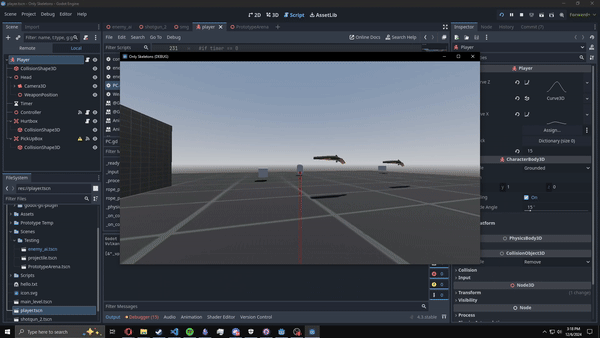
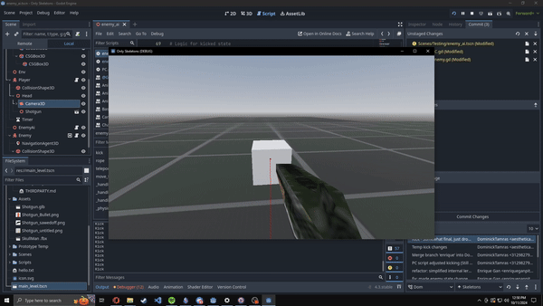

LAST WISH
- Lead Technical Designer - Currently I am the man designer for the game, so this at the moment includes level, gameplay mechanics, and combat/enemies.
- Additionally as a designer, I am also programming for the game too, using GDScript in Godot.
- Currently the game is in prototype phase as I work with a friend on developing out the game.
- Using Blender for 3D models. Texturing and modeling will be done by me.
- Created a game design doc to work as a basic outline, expanding as we develop the game.. Download.
Last Wish is an in-progress boomer shooter, featuring a lasso mechanic where you can pull enemies in and kick them around. This is mainly a focus on getting to know the Godot engine, but I do want to eventually make this a full title.
Project Responsibilities:
Released work highlights:

This is the latest testing with the game so far, here I'm playing around with how shooting feels, kick and pulling as well using a basic enemy set up. I want to really nail the balance of quick combat. I implemented early player feel too, using camera shake when shooting.

This here is a little earlier iteration and I'm testing how enemies react when being underneath the player.